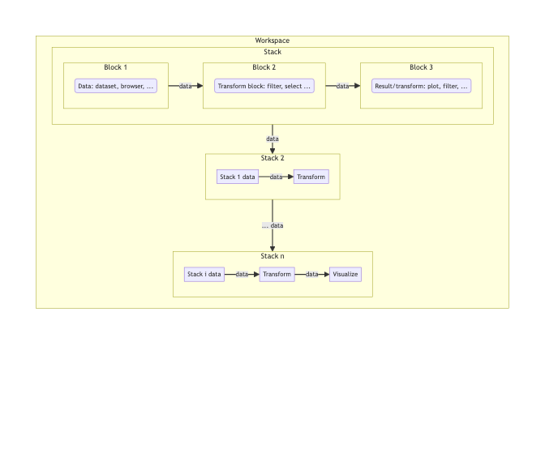

{blockr} is Shiny’s WordPress (John Coene, 2024)
Why blockr?
blockr is an R package designed to democratize data analysis by providing a flexible, intuitive, and code-free approach to building data pipelines. It allows users to create powerful data workflows using pre-built blocks that can be easily connected, all without writing a single line of code.

To get started, we invite you to read this vignette.
To get a better idea of blockr capabilities in various data context, you can look at this vignette.
Key features
- User-Friendly Interface: Build data pipelines with intuitive interface.
- Flexibility: Easily add, remove, or rearrange blocks in your pipeline.
- Extensibility: Developers can create custom blocks to extend functionality.
-
Reproducibility: Pipelines created with
blockrare easily shareable and reproducible, with exportable code. - Interactivity: Real-time feedback as you build and modify your pipeline.
Installation
You can install the development version of blockr from GitHub with:
pak::pak("blockr-org/blockr")Example: palmer penguins case study
Below is a simple case study involving blockr. We use the palmerpenguins dataset to find out which femal species has the largest flippers. We create 2 custom blocks allowing to create our plot block (see the plot vignette for more details). Note that the {blockr.ggplot2} package exposes some ready to use blocks.
library(blockr)
library(palmerpenguins)
library(ggplot2)
new_ggplot_block <- function(col_x = character(), col_y = character(), ...) {
data_cols <- function(data) colnames(data)
new_block(
fields = list(
x = new_select_field(col_x, data_cols, type = "name"),
y = new_select_field(col_y, data_cols, type = "name")
),
expr = quote(
ggplot(mapping = aes(x = .(x), y = .(y)))
),
class = c("ggplot_block", "plot_block"),
...
)
}
new_geompoint_block <- function(color = character(), shape = character(), ...) {
data_cols <- function(data) colnames(data$data)
new_block(
fields = list(
color = new_select_field(color, data_cols, type = "name"),
shape = new_select_field(shape, data_cols, type = "name")
),
expr = quote(
geom_point(aes(color = .(color), shape = .(shape)), size = 2)
),
class = c("plot_layer_block", "plot_block"),
...
)
}
stack <- new_stack(
data_block = new_dataset_block("penguins", "palmerpenguins"),
filter_block = new_filter_block("sex", "female"),
plot_block = new_ggplot_block("flipper_length_mm", "body_mass_g"),
layer_block = new_geompoint_block("species", "species")
)
serve_stack(stack)